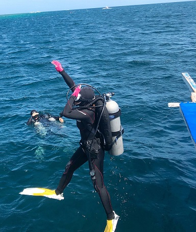

스쿠버다이빙의 세계
스쿠버다이빙이란?
장비 소개
자격증 소개
다이빙 포인트
스쿠버다이빙 장비

이름
설명
사진
공기통
수중에서 숨쉬기 위해 공기를 고압으로 압축하여 저장하는 통.
흔히 쓰는 것은 알루미늄 탱크.
사람들이 산소통이라 부르는 것이 사실은 공기통임.
호흡기
물속에서 숨쉬기 위해 필수적으로 필요함.
보조호흡기도 항상 같이 착용함.
부력조절기(BCD)
스쿠버장비 중 가장 중요하며 고가임.
물속에서 중성부력 유지를 하기 위해서 필요.
다이브 컴퓨터
수심, 온도, 잠수날짜, 잠수시간, 재잠수 가능시간 체크 등 잠수병 예방.
그 외 필요 장비들
은
마스크(수경), 핀(오리발), 슈트(웻, 드라이), 장갑, 후드, 웨이트(벨트), 게이지
수중칼, 수중전등, 다이브얼렛, 수중신호기, 다이빙기 등